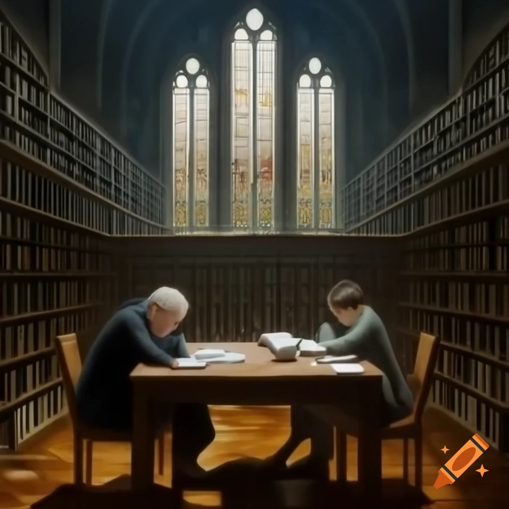

Definition of Art
Art can be defined as the expression or application of human creativity, skill, and imagination. It is often appreciated for its beauty or emotional power and encompasses a wide range of activities and forms. The definition of art varies greatly depending on cultural, historical, and personal perspectives.
What Art Means to Me
To me, art is present in everything that we do on a daily basis. Whether it is the job we have, where we can say we make art through our work, or cooking a meal, which can be considered art with food. Even our hobbies can be defined as art because this word can be present anywhere in our lives. Art is a form of self-expression, a way to show emotions, ideas, and stories without needing to say them out loud. It can be as simple as drawing shapes on a piece of paper or as complex as creating a mural full of colors and details.
"Art enables us to find ourselves and lose ourselves at the same time." — Thomas Merton
Art gives me freedom to explore, to make mistakes, and to grow. It is personal and meaningful in ways that go beyond what I can explain.
What Art Means to Others
Art can mean different things to different people. For some, it is a way to find beauty in the world around them. A painting or a sculpture might remind them of happy times or make them feel calm and peaceful. For others, art is about making a statement or expressing their beliefs. Many artists use their work to share ideas about the world, to inspire change, or to tell stories about their culture and history.
People also experience art in many ways. Some enjoy going to museums to look at famous works, while others like listening to music or watching movies. Art has the power to bring people together, to make them think, and to create emotions they might not feel otherwise. It is a universal language that can be understood in every corner of the world.
Forms of Art
Art exists in many forms, each with its own way of showing creativity and imagination. Some of the main types of art include:
-
Visual Arts: Painting, drawing, sculpture, and photography. These forms focus on
creating things that can be seen and admired.
-
Performing Arts: Music, dance, theater, and film, where the art is performed live
or recorded for an audience.
-
Literary Arts: Writing poetry, novels, and stories to create worlds and characters.

-
Applied Arts: Architecture, fashion, and crafts, which are both beautiful and
practical.
-
Modern Art Forms: Digital art, video games, and interactive installations made
possible by technology.
The Many Faces of Art
Explore the derivative forms of the word "art" and how they shape our understanding and appreciation of creativity.
Artist
An individual who creates art, expressing ideas, emotions, or a worldview through various mediums.
Artistic
Refers to qualities, actions, or expressions that are related to art or resemble artistic creativity.
Artistry
The skill and craftsmanship in creating art, often associated with excellence in a particular form of art.
Artistic Expression
The process of conveying thoughts, feelings, or ideas through various artistic mediums such as painting, music, or dance.
Artless
Referring to something that lacks artifice or pretension, often used to describe something simple or sincere, but also sometimes meaning lacking in artistic merit.